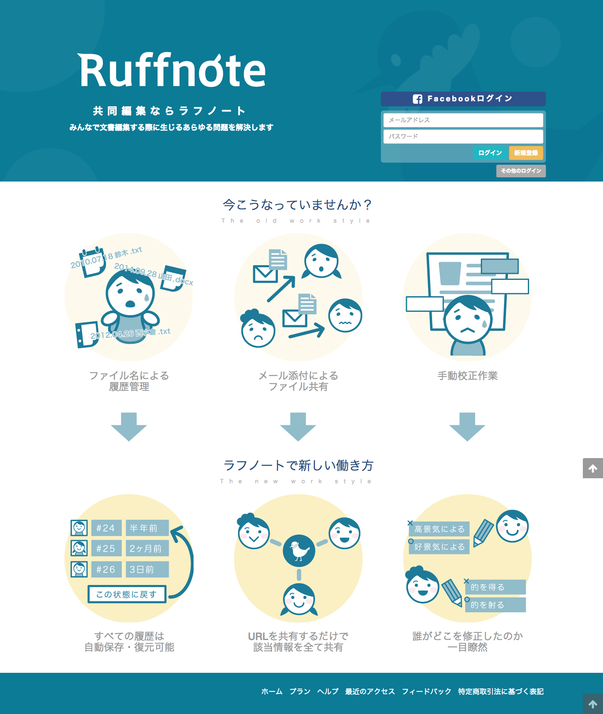
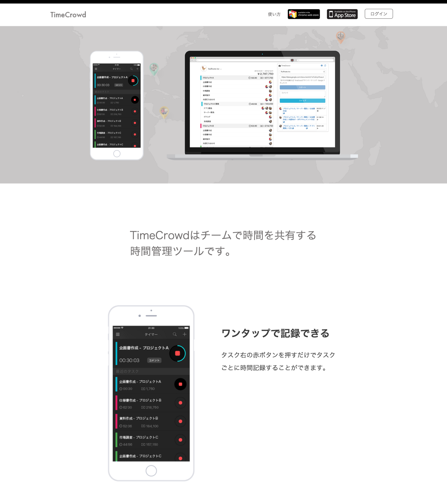

ラフノート株式会社のコーポレートサイトをご覧頂き、ありがとうございます。
見える化は機械に任せて人間にしかできないことに集中する

あらゆる製品やサービスには「文書」があり、
継続して安定供給するためには「文書の更新」が必要です。
しかし、IT化が進んだ現代においても、文書の更新は
Microsoft WordファイルをEメールに添付し、
メールの本文で変更箇所を記載するような
ワークフローが主流です。
Ruffnoteは全ての文書をオンライン上で編集することで
自動的に誰がどの箇所を更新しているかが見える化され、
管理者はその更新を受け入れるたり、受け入れずにコメントしたりできるサービスです。
https://ruffnote.com

あらゆる製品やサービスには「原価」があり、
継続して安定供給するためには「原価計算」が必要です。
しかし、「人件費」だけは
「1ヶ月のうちに何時間働いたか」しかわからず
その内訳がわかりませんでした。
TimeCrowdはオンライン上でタスク管理ができ、それぞれに対する打刻ボタンを押すことで
タスクごとにかかった時間を集計できます。
人件費登録もできるので原価計算もしてくれます。
https://timecrowd.net
| 社名 | ラフノート株式会社 (Ruffnote Inc.) |
|---|---|
| 本社 | 〒106-0031 東京都港区西麻布4丁目4-12 Sビル4階 |
| 役員 | 代表取締役 西小倉宏信 |
| 創業 | 2007年5月11日 （2014年5月13日「株式会社マインディア」から社名変更） |
下記よりデザイナーとディレクターを募集しています